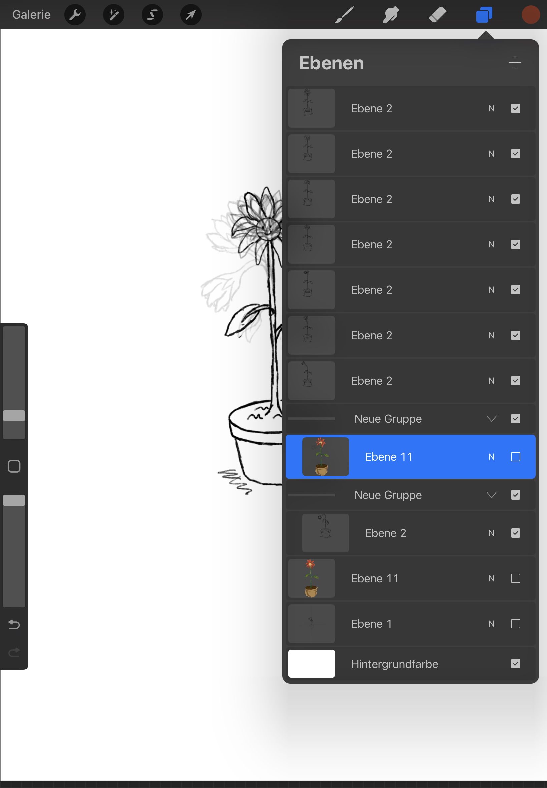

Animated GIF on Procreate
How I learned to animate a GIF on Procreate
The Youtube tutorial of minochipz "How to Animate in Procreate !! (easier than you think)" showed me a new way to use Procreate.
I always new you could animate on Procreate but always shied away from it out of fear it would be to difficult.
So these are the things I learned:
- how the opacity tool on Procreate is really helpfull when animating
being able to see the last layer underneath your new layer helps you draw the motion more fluently
- duplicating the lattest layer and just redrawing the part in motion makes the process faster and more efficient
I was aware that you could duplicate layers but I never needed it for the drawings I did. In my first animation duplicating became a helpfull tool because i only had to erase the stem of the flower and the blossom not redo the entire pot and the beginning of the stem.
- the animation itself is only a click away!
the actual part that makes the animation is the export tool you can use in the end of your finished drawing/layers. By selecting and exporting as an animated GIF you will get your first little animation!
- the finishing touches
after finishing all the layers and exporting it as an animated GIF you could select the frames the animated GIF will be shown in. Less frames mean a choppier animation, more frames mean a faster GIF animation.
My little Flower in the pot has less frames because I didn not have as many Layers so more frames would not work because than the GIF would be to fast.
If you are curious how my Layers looked like and how i duplicated them, here is a screenshot from my IPad ↓

What would I do diffrently now?
- more layers!
More Layers, smaller steps for the motion. When I finished my GIF i realised that I could only use 14 Frames per second to get a presentable looking GIF. For my liking the GIF ist too fast eventhough there are only 14 Frames per second and thats only due to the fact that I did not have enough layers in my animation so there was no big play on deciding how many frames I wanted.
- more "comic-looking" flower
this is actually a preference I did not know I had before.
- draw something else
one reason why I decided on a more easier sketch was because at first I thought creating an animation on Procreate would be really difficult but after watching the tutorial on on Youtube and actually being able to copy the steps and do my own animation I realised it is not that hard to do. But nobody is perfect ! Thats why I decide to stick to my not-so-perfect animation and save the perfect ones for later ;)
- Color it next time
a little color wouldn't hurt nobody but for my first animated GIF I wanted to keep it simple.
Reminder to me and you!
Eventhough there are things I would do differently now I am still proud of my first Animation/GIF. One reason I did not try animation earlier is because I was scared I could not do it but as you can see it is not that bad. I know I did not do the biggest animation known to mankind and you could definetly animate outside of that created GIF loop but I still animated a GIF and can now work further on my skills and animation because by learning this easy kind of animation I got to know the skills and tools that are requiered for animation. That will definitly help me with future animations.
If you sttruggeld with some tools I talked about I got the perfect video for you that explains the different toolboxes.
"How To Use Procreate Tools - Procreate Tutorials For Beginners" by Mad Tzen Arts .
Click here if you want to see my final result :) MyAnimatedGIF!